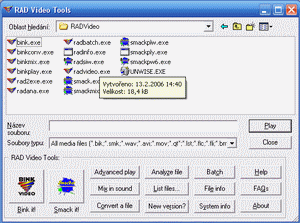
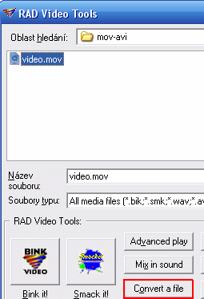

MOV je takový specifický formát Applu, takže možností k jeho editaci mnoho není. Některé ale existují a ty si ukážeme.
Možnosti editace nejsou nijak velké, jediné možné řešení je použít QuickTime Pro.
Jak jsem už psal, jedná se o formát Applu, a Apple tudíž vyvíjí i program na jeho editaci. Jmenuje se QuickTime Pro a je placený. Ty šťastné, co ho vlastní, odkážu na oficiální nápovědu Applu (anglicky).
Další možností, jak z MOVu něco „vytřískat“ je převést ho na AVI. I v této kategorii si nemůžeme mnoho vybírat. Programů zdarma mnoho není, pokud ale vydržíme s nějakou zkušební verzí nebo se nám chce investovat, můžeme získat slušný program.
Nejprve jsem chtěl otestova hodně programů, které umožňují převod mezi MOVem a AVI, ale zjjistil jsem, že to nebude nutné, protože jsem objevil program, který zbytek konvektorů strčí do kapsy.
Mým favoritem se stal program RAD Video Tools. Umí toho mnohem víc než pouze převod MOVu na AVI, ale o tom teď nepíšu.
Ovládání programu je velmi jednoduché, umí toho tak akorát.
Předpokládám, že máte nainstalovaný program. Spusťte ho a objeví se okno kodéru.
V horní části vidíte standarní dialog Otevřít/Uložit, musíte v něm najít video v MOVu, které chcete převést.
Klikněte na „Convert a file“ a objeví se dialogové okno. Vpravo klikněte na „Convert“. To vyvolá další okno, ve kterém vyberete kodek, kompresi atd. Potvrdíte a můžete se kochat výsledkem.
Bacha, po kliknutí se otevře PNG obrázek, který má rozlišení 685×864px a velikost 295kB.
Samotný program popíšu podrobněji později, díky za pochopení.
Video na PC: Vytvořeno v roce 2005 a víc. Autorem je Jan 'Šlaha' Šlahora. Veškerá práva vyhrazena autorům článků. Pokud není uvedeno jinak, jsem to já.
{kind=link}
{kind=link}